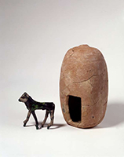

Leon Levy Expedition to Ashkelon
Appendices Material
Lawrence E. Stager, J. David Schloen, and Daniel M. Master
Edited by Nicholas Z. Schulte

Ashkelon 3: The Seventh Century B.C.
Tables
Ashkelon 7: The Iron Age I
Interactive Map
Tables
*Registered Pottery data can be viewed and downloaded within the Interactive Map.
Ashkelon 9
Forthcoming
- Leon Levy Expedition to Ashkelon
- Daniel Master
- Harvard University

- OCHRE Data Service
- Oriental Institute
- ochre.uchicago.edu